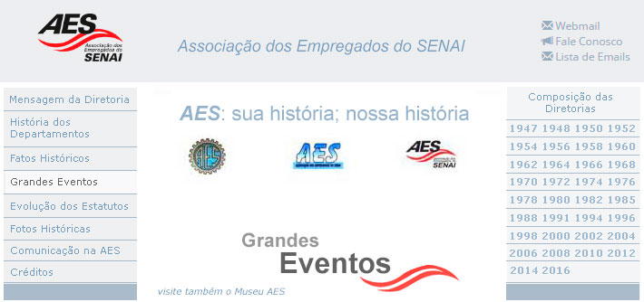
Desde sua fundação em 1947 a AES tem se mostrado muito ativa na criação de oportunidades de participação, buscando a integração de todos os seus associados. Os eventos associativos propiciam o contato entre as pessoas fora do ambiente de trabalho, além do encontro com os familiares dos colegas numa situação de confraternização. Isso promove o estreitamento dos laços e reforça a identificação entre os associados. E é esse envolvimento real dos associados que dá sentido à existência da nossa Associação. Neste campo vamos relembrar algumas das iniciativas da AES ressaltando que apesar de ser natural o destaque daqueles grandes eventos, não é seu porte que define o seu valor. A importância de uma atividade se mede pelo grau de engajamento dos envolvidos, sejam eles participantes ou organizadores. Assim, uma festa, um passeio, um concurso, um torneio, uma promoção, uma ação social; cada atividade representa um pequeno bloco na construção da história de nossa Associação.
1º FARAES – 1983 O 1º FARAES - Festival de Atividades Recreativa da Associação dos Empregados do SENAI, uma idéia do Departamento Esportivo, Social e Recreativo da AES, teve suas linhas gerais amplamente discutidas na Reunião com todos os Representantes, em fevereiro de 1983 na Colônia de Férias. As discussões havidas permitiram concluir sobre a conveniência da participação não só de associados, mas também de dependentes e de não-sócios da AES, de acordo com os objetivos expressos no Regulamento Geral do 1º FARAES. As modalidades disputadas (xadrez, damas, dominó, truco e buraco) possibilitavam, teoricamente, que todos participassem, pois é praticamente impossível encontrar alguém que não pratique, pelo menos, uma das modalidades. Incluindo-se as adesões de não-sócios e de dependentes, foram 1.477 inscritos para as diversas modalidades disputadas. Os Regulamentos foram redigidos de forma a possibilitar que muitas decisões fossem tomadas pelos próprios participantes. Desse modo, as dúvidas surgidas antes, durante e após a realização das partidas foram esclarecidas pelos próprios jogadores. Essa prática 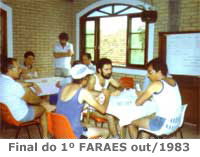 O sistema de agrupamento estabeleceu 12 Regiões, levando em consideração, fundamentalmente, o encurtamento de distâncias entre os CFPs/CTs. Com exceção da Fase Final, as fases iniciais (local e regional) foram planejadas e executadas pelos Representantes, por seus auxiliares e por todos os participantes. A primeira fase, desenvolveu-se como um ”Campeonato Doméstico”, ou seja, cada UFP realizou o seu próprio torneio e indicou seus respectivos “campeões”. A segunda fase, denominada “Campeonato Regional”, iniciada em agosto de 1983, selecionou os “campeões” de cada grupo. A Fase Final ocorreu na Colônia de Férias da AES, nos dias 15 e 16 de outubro de 1983, e contou um total de 96 participantes para as cinco modalidades disputadas. A repercussão provocada pelo 1º FARAES foi muito significativa em termos de abrangência e 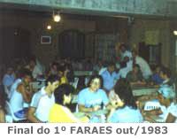 O sucesso do 1º FARAES motivou a sua reedição pela AES por várias vezes, todas com enorme acolhida por todos associados; em 2012 chegamos ao 20º FARAES que envolveu a participação em seu todo de mais de 500 pessoas entre competidores, familiares e convidados. Mais recentemente, em 2014 realizou-se o 22º FARAES que apenas na fase final contou com a participação de 130 pessoas. O 1º FARAES foi realmente um evento memorável, um orgulho para a AES.
Festas Típicas As festas típicas da AES se constituem, via de regra, em eventos marcantes e são sempre muito prestigiadas. Os Departamentos da AES mostram todo o seu empenho na escolha do tema e se esmeram na sua preparação. O ponto de partida de toda festa é uma boa idéia inicial que rapidamente ganha a adesão de muitos colaboradores e o resultado é a participação de um grande número de associados da Capital e do Interior do Estado. Cada festa tem suas particularidades e vale a pena rememorar algumas: Festa do Chope - 1974 Em 14 dezembro de 1974, para promover uma maior integração de seus membros, a Associação dos Empregados do SENAI - AES realizou, na Ponta da Praia, em Santos, a Festa do Chope a bordo dos navios Turimar II e Turimar V onde estiveram presentes mais de 550 associados. Inicialmente, a promoção seria feita somente no navio Turimar V, mas dada a grande procura que houve por parte dos associados, que queriam de alguma forma participar do evento, a Diretoria da AES teve que se desdobrar para atender os interessados,
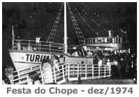 A iniciativa da AES teve êxito completo; seus associados, muitos dos quais vindos do interior, como Jundiaí, Sorocaba e Ribeirão Preto, receberam muito bem a promoção. Empunhando seus canecos, com grande entusiasmo e animação, os participantes entraram no ritmo do som do conjunto musical promovendo um verdadeiro carnaval a bordo. A Festa do Chope em Santos consagrou-se como um importante evento na história da AES. Superou as melhores expectativas deixando, para os organizadores e participantes, excelentes recordações. Festa de Comemoração dos 50 anos da AES - 1997 Outra festa típica de grande sucesso ocorreu por ocasião das comemorações dos 50 anos da AES. O evento, ocorrido em 15 de novembro de 1997, é lembrado como “A Festa Alemã” e realizou-se nos moldes da Oktober Fest que ocorre anualmente em Santa Catarina. Durante algumas horas o estacionamento coberto da sede administrativa do SENAI/SP, na época instalada no Bairro do Cambucí,
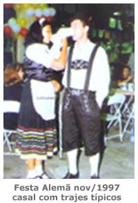 Dois conjuntos, a "Banda Gostoso Veneno" e a "Banda Tirolesa", revezavam o repertório, com axé music, jovem guarda e músicas típicas alemãs. Um buffet foi montado para fornecer cerca de 3.500 litros de chope, mil litros de refrigerantes e 1.850 quilos de comidas típicas, como kassler (bisteca de porco), eisbein (joelho de porco), chucrute (repolho), knödel (pão), além das tradicionais salsichas. A participação foi para valer. Associados e familiares vieram do Vale do Paraíba, das cidades de São José dos Campos, Jacareí e Pindamonhangaba; outros, de Jundiaí e dos municípios da Grande São Paulo e Capital. O Presidente da Associação, Mario Zanoni Adolfo Cintra, recepcionou orgulhoso e satisfeito o Presidente do Conselho Regional do SENAI, Carlos Eduardo Moreira Ferreira, o diretor regional, Fábio Luiz Marinho Aidar, os conselheiros Jaime Pasmanik e Carlos Lázaro Júnior. A abertura oficial da festa foi feita pelo presidente do Conselho Regional do SENAI-SP Moreira Ferreira que na oportunidade declarou: "Esta festa linda de confraternização tem um significado especial. São os 50 anos de uma associação que vem sendo dirigida e mantida pelos associados. Espero que a diretoria continue a realizar este trabalho profícuo. Estão de parabéns todos os associados, indistintamente". Na mesma ocasião Fábio Aidar, Diretor Regional do SENAI-SP, afirmou que "a Associação deu uma contribuição inestimável para o crescimento e consolidação das atividades do SENAI. O sentido do evento é caracterizar a perenidade da - AES, construída coletivamente durante esses 50 anos. Ela ajudou a construir a história do SENAI." Para a realização desta Festa Alemã foi fundamental o empenho de todos os integrantes do Corpo da Administração da AES. A Festa de Comemoração dos 50 anos da AES além das boas lembranças, deixou registrada a capacidade de empreender de seus associados. Estão de parabéns os organizadores. Ceia de Natal com Papai Noel e Ceia de Ano Novo na Colônia de Férias em Itanhaém Dois eventos que se tornaram tradicionais na AES são as comemorações de Natal e de Ano Novo em nossa Colônia de Férias em Itanhaém. Desde a década de 1970 associados e familiares se reúnem para desfrutar do clima de confraternização geral que se forma naquele núcleo de lazer. Para se ter uma ideia de como o evento é concorrido, basta lembrar que em 2010 participaram da Ceia de Natal 145 pessoas e da Ceia de Ano Novo, 190 pessoas. Os funcionários da Colônia demonstram toda dedicação na organização do evento: As mesas, distribuídas pelo Restaurante e pela Sala de Estar, são cuidadosamente decoradas com flores, garrafas de espumante, taças, toalhas e guardanapos coloridos; É preparado um Buffet completo com saladas e frios, pratos e assados típicos das festas de fim de ano, frutas e doces diversos, bebidas e sucos. Antecedendo a Ceia de Natal, desde 1981, portanto há 31 anos até 2012, desenvolve-se uma cerimônia especial – A Celebração do Natal com Papai Noel. Esse trabalho foi implantado e vem sendo desenvolvido voluntariamente, com todo o apoio da AES, pelo associado Moacyr Bagnarelli que nesse período incorporou Papai Noel por 29 vezes. Nos dois anos em que precisou se ausentar foi substituído por colegas hospedados na colônia: Em 2007 por José Roberto Nunes do Espírito Santo e em 2010 por José Benedito Pedro de Oliveira. Trata-se de uma atividade comunitária, que tem por objetivo congregar os associados hospedados e os empregados da colônia, seus familiares e convidados, com enfoque na integração do grupo, na confraternização, na fraternidade e na solidariedade. Previamente, divulga-se a realização da celebração e solicita-se a todos os interessados que adquiram presentes para seus filhos, netos ou outros familiares e amigos. Esses presentes, devidamente identificados são guardados na Secretaria. Organiza-se então o ensaio das crianças e adultos que irão participar ativamente da cerimônia: presépio vivo, leitura e comentário de textos alusivos à data, jogral, coral ou outras atividades previstas. Momentos antes da Ceia desenvolve-se a celebração cristã do Natal comemorando o nascimento de Jesus com a participação das crianças e adultos nas atividades programadas. Em seguida, o Papai Noel realiza a distribuição dos presentes previamente adquiridos pelos responsáveis. Balas, pirulitos e doces são distribuídos a todos, inclusive aos funcionários da colônia como reconhecimento e agradecimento pelo trabalho realizado. Na sequência todos participam da Ceia de Natal. Registre-se que em várias ocasiões, o Papai Noel da AES, representando a Associação, visitou pacientes internados no hospital local, com distribuição de balas e doces, além de levar uma palavra amiga. Essa visita só não se realiza quando já existe outro Papai Noel programado. Para a Ceia de Ano Novo o esmero dos funcionários da Colônia de Férias se repete tanto na decoração das mesas como na preparação do Buffet. Houve ocasiões em que alguns associados optaram por utilizar a churrasqueira e, em clima de cordialidade, convidaram os demais a participar também do churrasco. Tornou-se um hábito, após a Ceia de Ano Novo todos irem à praia brindar a chegada do Ano Novo onde podem assistir a bela queima de fogos de artifício que ocorre em Itanhaém quando se estabelece um clima de grande espetáculo e de muita confraternização. Festa das Crianças Um evento que tomou corpo e vem se destacando nos últimos anos em nossa Associação é a Festa das Crianças da AES. Nos primeiros anos da AES o Dia das Crianças não era comemorado isoladamente. Naquela época realizava-se, em dezembro, a Festa de Natal dos filhos dos associados, como a ocorrida em 24 de dezembro de 1955 na qual compareceram cerca de 1.500 pessoas com farta distribuição de presentes e animação do Palhaço Arrelia e sua trupe que apresentou a conhecidíssima atração do circo, da TV e do cinema o “Show do Arrelia”. A primeira menção do Jornal da AES à Semana da Criança ocorreu na edição de setembro/outubro de 1954 reproduzindo muito laconicamente as manifestações do Vereador da Cidade de São Paulo Gumercindo Fleury e da Educadora paulista Carolina Ribeiro, cuja mensagem destacava a importância dos pais e do lar na busca do bem estar e da boa formação das crianças. Apenas na década de 1990 é que a Festa das Crianças passou a ter regularidade entre os eventos da AES, de modo que em 1997 o Informativo AES divulgou o sucesso da então “já tradicional” Festa das Crianças, esta realizada em 23 de novembro daquele ano, na sede da AES no Cambuci. Na ocasião, foram premiados os vencedores do Concurso de Arte Infantil que envolveu mais de 800 crianças em todo o Estado. Na festa, as crianças eram recepcionadas pelo personagem “Banana de Pijamas”, enquanto monitores orientavam as crianças nas brincadeiras de quadra e pula-pula, nas oficinas de pipas, de fantasias e de catavento. Durante a festa os desenhos referentes ao concurso foram expostos nos corredores da AES. No ano seguinte, em 1998, a festa passou a ser realizada no Clube de Campo em Jundiaí. Com o passar dos anos, a Festa das Crianças da AES passou a incorporar outras atividades monitoradas para crianças e também para adultos. Além da equipe de recreação que promove gincanas, brincadeiras e shows, houve uma inovação na festa no Clube de Campo de 12 de outubro 2002 a qual foi sede do “1º Festival Esportivo” dividido nas modalidades Voleibol e Futebol Society. Foram formadas duas equipes infantis com a participação de 12 crianças e quatro equipes de adultos envolvendo 46 pessoas. Esse evento de 2002 ficou marcado também pelo comparecimento de um público recorde de 1.200 pessoas. Mais recentemente, durante a Festa das Crianças de outubro de 2011 a AES inaugurou a Cancha de Bocha em seu Clube de Campo com a realização do “1º Torneio de Bocha da AES”. Nestes últimos anos, a AES tem realizado sua Festa das Crianças em dois locais, no Clube de Campo em Jundiaí e também no Clube Náutico em Boracéia. Tanto 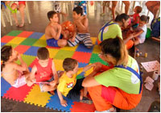 O empenho do Departamento Cultural e Recreativo em articulação com os demais setores da AES para a realização da Festa das Crianças tem sido altamente recompensado com a participação maciça das crianças nos concursos infantis, com a presença de um público expressivo e com o grande envolvimento de todos. A Festa das Crianças da AES transformou-se em um evento marcante para a família senaiana.
1ª EXPOSIÇAO DE ARTE DA AES Um evento, muito significativo, que merece registro foi a 1ª EXPOSIÇAO DE ARTE da Associação dos Empregados do SENAI - AES; uma iniciativa de seu Departamento 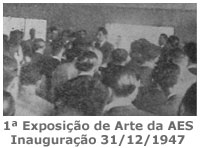 Os quadros, mosaicos e esculturas eram de autoria dos Artistas associados da AES e ficaram expostos até 11 de janeiro. O encerramento da 1ª Exposição de Arte foi organizado pelo Departamento Cultural subsidiado pelo Departamento Social Recreativo e se constituiu num encontro ao qual denominaram de “REUNIÃO LÍTERO - MUSICAL – DANÇANTE”. A festa, dividida em três partes, foi descrita no Boletim da AES nº 1 (de janeiro de 1948) nos seguintes termos: REUNIÃO LÍTERO - MUSICAL –DANÇANTE. A 1ª Exposição de Arte, acontecimento que marcou época nos meios artísticos da Associação, registrou, no seu encerramento, outra tertúlia tão grande quando a primeira, na sua abertura. Fechada assim, com chave de ouro a iniciativa opima, o Departamento Cultural, subsidiado pelo Social Recreativo, promoveu, em 11 do mês em curso, um programa que, dizer de seu êxito seria fazer pleonasmo do arrebatamento que perdura ainda em cada sócio. A festa desenvolvida no dia, constou do seguinte: 1ª PARTE CONFERÊNCIA - A cargo do professor Antônio Oswaldo Ferraz, Inspetor de Ensino da Secretaria da Educação, Membro da Associação dos Escritores do Estado de São Paulo e conhecido crítico de arte. Sua palestra sabre "A Pintura através dos Séculos", bem dosada, de comentários judiciosos e oportunos, foi um grande sucesso. Que o diga a seleta assistência que compareceu a ela e que, entusiasticamente o cumprimentou. 2ª PARTE RECITAL DE PIANO - Do professor Otávio Zuicker, Concertista pelo - Conservatório Dramático e Musical de São Paulo, pouco se pode dizer. Pouco, porque acrescentar comentários favoráveis à crítica de quem o aplaudiu seria fiar elogios em rosário. Basta citar-se o fato de, terminado o recital, a assistência em pé, ter ovacionado o artista. Não teve outro jeito o professor Zuicker, fora do programa, executou a Dança do Fogo para contentar seus admiradores. 3ª PARTE VESPERAL DANÇANTE - Como terceira parte da reunião do dia, abrilhantado pela "Orquestra Invisível". já enriquecida com ótimos números doados à Discoteca da AES, teve lugar uma vesperal dançante, que se prolongou até às 19 horas. Um farto "buffet" com refrescos, sanduíches, ponches etc., a preços irrisórios, foi posto à disposição dos associados. Os trabalhos apresentados na 1ª Exposição de Arte da Associação dos Empregados 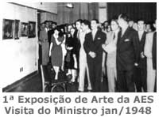 Um bom indicador da repercussão alcançada pela 1ª Exposição de Arte da AES foi a informação de que o Ministro do Trabalho Morvan Dias de Figueiredo mostrou interesse em conhecer as obras que haviam sido expostas. O Diretor Regional do SENAI solicitou então à AES que reabrisse a Exposição a fim de que S. Exa. o Ministro pudesse apreciar as obras quando de sua visita a São Paulo. A 1ª Exposição de Arte foi um acontecimento ímpar que estabeleceu o padrão de excelência nos eventos da Associação dos Empregados do SENAI tendo motivado todos os Departamentos da AES a desenvolver outras grandes realizações sempre muito prestigiadas.
BAILE DA PRIMAVERA E Um evento muito aguardado pelos associados da Associação dos Empregados do SENAI é o Baile de Aniversário da AES. Na realidade, esse evento se constitui o ponto alto da programação, encerrando com chave de ouro as festividades relativas ao aniversário da Associação. O primeiro Baile de Aniversário surgiu com um "Jantar-Dançante da Primavera" e ocorreu em 11 de setembro de 1948, com a ocupação de todas as mesas disponíveis. Durante o evento foram escolhidas a Rainha da Primavera e as Princesas. Após o jantar, organizou-se um pequeno show que teve a participação de vários associados e, em sequência aconteceu o esperado baile. No ano seguinte, em 24 de setembro de 1949, foi assumido o nome oficial de Baile da Primavera com a participação da Orquestra H. Riga. Depois, em 23 de setembro de 1950, ocorreu a solenidade de entrega da sede social da AES aos associados pelo Diretor Regional do SENAI - Roberto Mange e em seguida teve início o 3º Baile da Primavera da AES. O "Boletim da AES" de outubro de 1950, no final da notícia, registrou:
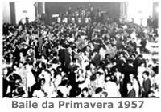 Houve ocasiões em que as comemorações da AES se integraram mais diretamente às comemorações do SENAI como em 1992. Nesse ano, o Baile da Primavera da AES realizou-se no salão do Esporte Clube Banespa e foi incluído nas comemorações do cinquentenário do SENAI; foi abrilhantado pela Orquestra de Osmar Milani, ao som dos anos 50. Como curiosidade, registre-se que a única reclamação dos participantes é que a data do Baile, 24 de outubro de 1992, coincidiu com a entrada do horário de verão, o que acabou significando a perda de uma hora de divertimento, pois os relógios foram adiantados à meia-noite, quando o baile já estava quente. Outras vezes ocorreu uma presença mais significativa de associados no evento como em 29 de outubro de 1994, quando o Baile da Primavera realizou-se no Club Holms na Avenida Paulista com a Banda Fênix e contou com a participação de mais de 800 pessoas. A partir de 2002, ano em que se comemorou os 55 anos da AES, esse evento passou a denominar-se de Baile de Aniversário da AES mantendo, porém, a mesma tradição de encerrar em grande estilo as festividades referentes ao aniversário de fundação da AES. O Baile de Aniversário da AES de 2006 ocorreu no Bovinus Grill abrilhantado pela exuberante Banda Nautilus. Nele compareceram mais de 300 pessoas, vindas de diversas localidades, até de Presidente Prudente. Excelente jantar, boa música, baile animadíssimo com pista lotada, ambiente alegre e cheio de energia, o evento comemorou dignamente os 59 anos de nossa Associação com direito a bolo e muitas velinhas, apagadas ao som dos Parabéns cantado por todos os presentes. Em 2007, para comemorar o 60º aniversário da AES, foram realizados cinco eventos, em diferentes cidades do Estado de São Paulo, para que todos tivessem a oportunidade de participar dessa importante comemoração. A Coordenação Geral dos eventos ficou a cargo da Vice-Presidência da AES, que com capacidade e dedicação conseguiu realizá-los com muito sucesso, juntamente com o apoio dos Coordenadores Locais, Diretoria da AES e um grande número de colaboradores. Com a animação especial da Banda Millenium, participaram do evento associados, familiares e convidados, além dos membros do Corpo de Administração da AES. Todos os Bailes-Jantar Dançante em comemoração aos 60 anos da AES contaram com o apoio da DEB'MAQ e UNIESP que foram os patrocinadores oficiais. • No dia 28 de agosto, iniciando os Bailes com Jantar Dançante, realizou-se uma emocionante e animada festa no Bauru Tênis Clube. Os 430 participantes de Bauru e diversas cidades vizinhas, puderam desfrutar de um ambiente festivo com decoração e organização impecáveis. Duas maquiadoras e cabelereiras ficaram disponíveis para cuidar do visual dos participantes da caravana de São Paulo. Um jantar com muita variedade foi servido. Durante o grandioso baile houve sorteio de brindes, doados por empresas de Marília e Santa Cruz do Rio Pardo. Não faltou um delicioso bolo na hora de cantar o tão esperado Parabéns à AES. • O Baile com Jantar Dançante, realizado no dia 13 de outubro, no Ipanema Clube, em Ribeirão Preto, possibilitou uma festa realmente animada e de muita confraternização. Participaram 300 pessoas de cidades como Ribeirão Preto, Araraquara, Sertãozinho, Franca, São Carlos, Jaú, Botucatu, Cajuru, Rio Claro, Piracicaba, Americana, Indaiatuba, Jundiaí, Osasco, São Paulo e Mauá. Entre 20h e 3h diversas atrações serviram para o entretenimento de todos nessa comemoração. Foram servidos coquetéis, diversas e fartas opções de pratos, sobremesas e bebidas, incluindo cerveja e vinho frisante. Durante o evento foram sorteados diversos brindes, oferecidos pelas Escola SENAI de Franca, São Carlos, Ribeirão Preto e por diversos empresários da região de Ribeirão Preto. • O Jantar Dançante em comemoração aos 60 anos da AES de Birigüí, foi realizado no Birigüí Pérola Clube, entre 20h e 2h. Participaram 170 pessoas de diferentes cidades como Birigüi, Votuporanga, Presidente Prudente, Marília, Araçatuba, Santa Cruz do Rio Pardo, São José do Rio Preto, Jundiaí e São Paulo. Foram momentos de muita alegria. O Jantar estava magnífico com coquetel de frutas de entrada, mesas de frios e de pratos quentes, bebidas como vinho frisante e sobremesa de bolo decorado com sorvete. • São José dos Campos realizou o Baile com Jantar dançante, no dia 10 de novembro, no amplo salão do Espaço Cassiano Ricardo. A festa foi um sucesso, 630 pessoas, local que teve o maior número de participantes nos bailes de 2007. Logo na recepção foi servido um coquetel ao som de saxofone e flauta, tocadas por um músico que circulava pelo espaço entre os convidados tornando o ambiente mais agradável. Após a chegada da maioria dos convidados, o segundo salão foi aberto para que cada grupo pudesse se acomodar em mesas reservadas e impecavelmente decoradas. A decoração do salão mostrava muito esmero, classe e beleza, além de revelar todo o empenho do organizadores. Os presentes dançaram durante toda a festa, parando apenas para degustar o maravilhoso buffet de pratos frios e quentes, sobremesas e diversas bebidas. • Para finalizar as comemorações de 60 anos da AES foi realizado um Jantar Dançante em São Paulo, no dia 24 de novembro, na belíssima Casa de Portugal localizada no bairro da Liberdade. O salão apresentava uma decoração de muito bom gosto e o evento só terminou às 3h. Foram servidos coquetéis, pratos frios e quentes, bebidas diversas, bolo e sorvete. A festa estava tão animada que a Banda Milleniun não conseguia parar para um intervalo, pois os convidados pediam mais músicas para dançar. A animação aumentou quando foram distribuídos adereços aos que dançavam, como óculos e colares com pisca-pisca. O Troféu Pé de Valsa foi entregue aos onze associados que participaram dos cinco eventos comemorativos do 60º aniversário da AES. Um brinde especial e o Parabéns à AES encerraram esta festa que marcou um grande momento na história da AES em seus 60 anos. Ao longo desses anos, o Baile de Aniversário da AES consolidou-se como uma tradição de nossa Associação e vem recebendo sempre o carinho dos associados e muita atenção da Diretoria da AES em sua organização.
EVENTOS CULTURAIS Alguns eventos expressivos foram promovidos pela AES nas áreas de música, de teatro e de literatura, despertando talentos, gerando oportunidades de expressão artística e promovendo muita diversão e entretenimento a seus associados e dependentes. Na área musical, a AES Patrocinou a organização da Orquestra e Coro, sendo que o associado Ary Vieira de Albuquerque incumbiu-se de sua organização e regência. A Orquestra e Coro da AES, que em algumas ocasiões apresentava-se como Orquestra Filarmônica do SENAI, fez sua 1ª exibição em 05 de setembro de 1949 em homenagem aos bolsistas que
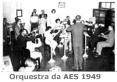 Ainda na área musical, a AES organizou em 1956 o seu Conjunto de Violões e Coral, com mais de 20 integrantes. Patrocinou, também, a formação da Banda Lion; um conjunto musical formado por associados. Muito prestigiada, a Banda Lion fez várias apresentações entre 1995 e 2000 e se encarregava da animação dos eventos da AES e Festa de Fim de Ano do SENAI. Eram seus integrantes: Luiz Ozaki (Organizador), Ana Neri Metidieri (no apoio), Antonia Fontanete (Vocalista Backing), João Anastácio de Aguiar Neto (Guitarra/Violão), João Cesar Maciel (Guitarra e Vocal Backing), Maria Aparecida de Lamo Maciel (Vocalista Backing), Newton Borges Junior (Vocalista Lead), Pedro Javier Aguerre Hughes (Baixista e Vocal Lead), Valério de Castro Ferraz (Vocalista Lead) e Vicente Rutledge (Tecladista). Em 21 de junho de 2008 a AES promoveu seu "1º Festival de Inverno" com uma apresentação da Orquestra Sinfônica do SENAI. O
evento, realizado no Clube de Campo da AES, 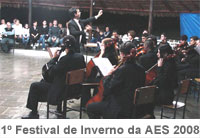 Na área teatral, a AES organizou um grupo chamado Grupo Teatral de Novos, que se exibiu nos teatros do SESI e do SENAI, inclusive em Santo André, Itu e Taubaté, com grande sucesso.
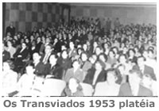 Mais recentemente, em 1995, organizou do Grupo de Teatro "Trupe Flic D Vic" que apresentou “Mural Mulher” escrita por Diógenes Chiaradia Feliciano,
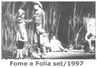 As apresentações com “salas cheias” dão a medida da receptividade das ações da AES na área do teatro. Na literatura, foram várias as iniciativas da AES em concursos de contos e poesias com grande participação de associados; no Concurso Cultural de 2001, somente na categoria Conto e Poesia, concorreram 140 trabalhos e no Concurso de Causos em 2013 concorreram 70 trabalhos. Em 1984 houve outra iniciativa da AES que merece destaque: o “I CONCROPAES - Concurso de Contos, Crônicas e Poesias da AES”. Entre agosto e outubro daquele ano o Departamento de Cultura e Divulgação recebeu dos associados (da ativa e aposentados) e seus dependentes, 68 trabalhos. Deste total, a Comissão Julgadora selecionou inicialmente os 18 melhores trabalhos e, a seguir, os seis vencedores; foram eles: Neusa Cardoso, Rosana Freitas da Cruz, José Porto, Antonio Leite Netto, Milton Ferraz de Campos e Moacyr Bagnareli. Nesse Concurso, além do prêmio aos seis finalistas os 18 autores classificados receberam outro prêmio: a divulgação de suas obras no livro - I CONCROPAES, João Scortecci Editor. Ainda na Área Cultural, outro importante evento acrescido às atividades da AES foram os Encontros Culturais. Nestes passeios de um dia os participantes visitam exposições, locais e mostras para apreciadores da arte em suas diversas expressões. Iniciado em 2006 o evento cobriu diversas áreas culturais como: Bienal de Arte de São Paulo, Museu da Língua Portuguesa, Exposição Marroquina na FAAP, O Florescer das Cores - A Arte no Período Edo na Pinacoteca, Coleções do Museu Nacional do Azulejo de Lisboa na Galeria de Arte do SESI, Templo Zu Lai dedicado à fé budista, Palácio dos Bandeirantes (sede do governo estadual paulista), Museu do Futebol no Pacaembu, Bossa na OCA (exposição sobre a bossa nova), Catavento Cultural (exposição científica), Memorial do Imigrante, Água na OCA (exposição sobre a água), Roberto Carlos – 50 Anos de Música na OCA, Exposição Caravaggio no MASP, exposição de fotos Terra em Transe no MASP, Museu Paulista da USP (conhecido como Museu da Independência), Solo Sagrado – Santuário da Igreja Messiânica, Aquário de São Paulo, Fotos e Movimento na FAAP, Corpos e Rostos no MASP entre outras. Esse painel demonstra como é possível, com pequenos atos, conhecer e valorizar a arte, favorecendo o conhecimento de sua diversidade. As visitas em grupo valorizam o passeio, possibilitando troca de ideias e experiências. A atuação da AES na área cultural vem se ampliando e se diversificando; a melhoria da comunicação permite a implementação de idéias novas e o envolvimento de mais pessoas. Além dos concursos culturais seguidos de exposições e concursos de artes infanto-juvenis, têm surgido propostas mais recentes como o Cine Debate. Dezenas de pessoas têm prestigiado a Mostra de Filmes organizada pelo Departamento de Cultura e Divulgação. Ao longo de 2007, foram realizadas sete edições do Cine Debate no Auditório da Escola SENAI de Informática, nas quais a abertura constava da recepção com café e apresentação musical pelo Professor Eduardo Campos, seguida da apresentação do filme e realização de uma explanação conduzida por debatedores especialmente convidados para o evento. Dentre os debatedores, tivemos Psicólogos, Terapeutas e Professores ligados à PUC-SP e UNICAMP; Assistentes Sociais e até um Poeta e Professor de Literatura ligado à Universidade Federal de Alagoas. Durante o ano de 2008, também foram realizadas sessões do Cine Debate na Escola SENAI "Armando de Arruda Pereira" em São Caetano do Sul e Escola SENAI "Roberto Mange" em Campinas; observando-se que, em Campinas, o evento foi muito prestigiado com a presença de 61 pessoas. Os Representantes da AES em parceria com os departamentos da Associação vêm promovendo sessões de Cine Debate em suas Unidades a exemplo de Araraquara, Presidente Prudente, São Carlos, São João da Boa Vista, etc. O Cine Debate representa uma iniciativa importante do Departamento de Cultura e Divulgação em sua intenção de trazer arte, cultura e lazer para os convidados e associados da AES e esse evento continua sendo desenvolvido e expandido para outras localidades.
TORNEIOS DE FUTEBOL Na história da Associação dos Empregados do SENAI - AES sempre houve muita demanda na área esportiva, pois seu quadro associativo é formado por gente de espírito jovem, de muita energia e que, realmente, gosta de ação. Desde sua fundação, a AES tem promovido inúmeros torneios esportivos internos e participado ativamente de torneios externos. Revendo a história de nossa Associação observa-se uma grande atuação da esquadra da AES nas modalidades basquete, voleibol e, principalmente, futebol. O futebol pode não ser unanimidade, porém o amplo conhecimento de suas regras aliado a facilidade de adequação às condições de qualquer local faz com que seja a modalidade esportiva preferida por muitos associados. O Boletim Informativo da AES de junho/julho de 2008, homenageando o Dia do Futebol, traz um artigo interessante sobre esse esporte na AES; vamos a ele: 19/07 - DIA DO FUTEBOL - Qualquer lugar, qualquer horário, junta-se um grupo, improvisam-se traves, começa-se a chutar e, de repente, estamos no meio de uma partida de futebol. Dois times: com camisa X sem camisa, casados X solteiros, jovens X veteranos, azul X vermelho e muitas outras variações. Na falta de uma bola de couro serve uma de meia, de jornal, de latinha, qualquer coisa para chutar nesse bate bola descontraído. O futebol é o esporte mais popular e disputado no mundo! Para o futebol tradicional, um grande campo gramado retangular e 11 jogadores para cada time. Para o futebol society, um gramado menor com pelo menos sete jogadores de cada lado. Para o Futsal, uma quadra semelhante à de basquetebol e cinco jogadores de cada equipe. Na AES a paixão pelo futebol é muito antiga. Em novembro de 1947, recém fundada a nossa Associação, uma das primeiras atividades foi formar um time de “football”, então chamado de “esporte rei”. E uma das fotos mais antigas encontradas ilustra uma notícia publicada no Boletim da AES de julho/48, do AES FUTEBOL CLUBE, que empatara, em 1X1, o jogo contra o Clube de Regatas Nitro-Química. Foi no dia 11/06/1948, com a equipe vestindo camisas listradas doadas por um grupo de instrutores da Roberto Símonsen. Na foto, claramente identificado, nosso então muito jovem colega Walter Sattin. E a bola nunca mais parou de rolar na AES. Mesmo nas situações mais difíceis, quando quase nenhuma atividade era realizada, o jogo de futebol era sagrado. Muitas equipes, de quase todas as escolas do SENAI, participaram e participam dos torneios, campeonatos, festivais, e o que mais for organizado. Esse grande grupo de fanáticos pelo futebol trabalha de segunda à sexta, mas dedica algumas horas à noite para treinar e os fins de semana para jogar. Basta mostrar a bola e o pessoal já se reúne. Atualmente a AES desenvolve duas modalidades: Futsal (livre eveteranos) e Futebol Society. As equipes são divididas em duas grande regiões: capital e interior. No encerramento de cada modalidade há uma grande confraternização entre os primeiros colocados de cada região para disputar uma taça estadual. Levantamos algumas curiosidades sobre o grupo de fanáticos pelo futebol que une a AES:
• esporte democrático, reúne jogadores de todos os níveis hierárquicos do SENAI; Por todo esse esforço, no Dia do Futebol nossa homenagem aos mais de 700 “atletas” da AES que conquistam “na raça” muito mais que troféus e medalhas: conquistam o companheirismo, a amizade, as equimoses, eventuais traumas, os abraços, o espírito familiar, as festas, e, porque não, o direito ao chope! Por isso, de caneco na mão, um brinde a todos nossos colegas futebolistas. Um show de criatividade e bom humor é proporcionado por nossos colegas até na hora de nomear ou apelidar suas equipes, eis alguns exemplos: Toque de Mestre de Cubatão, Nhô Quim e Kaipiras de Piracicaba, Real Cervejaria de Lençóis Paulista, Índio Grosso dos Pampas do CFP 1.65, Os Piratas do CFP 1.03, Artrose F. C. do CFP 1.09, 508 Kbytes de Itatiba, E. C. Retalho do CFP 1.10, Sobrenaturais de Mogi das Cruzes, Tijolinho do CFP 1.11, Já Fui Bom Nisso dos CFPs 1.02 e 1.26, Ruim de Bola e Bom de Copo do CFP 1.07. Brincadeiras a parte, o artigo veiculado pelo Boletim Informativo retrata com muita clareza a importância dos torneios futebolísticos para os associados da AES. Ao mesmo tempo, os números referentes aos eventos esportivos são igualmente significativos: no biênio março/2006 a fevereiro/2008 um total de 1.048 atletas e 2.793 acompanhantes foi mobilizado pelos eventos esportivos da AES. No Interior de São Paulo foram organizados: Futsal Veterano com 208 atletas e 472 acompanhantes; Futsal Livre com 327 atletas e 796 acompanhantes; Futebol Society com 472 atletas e 1.121 acompanhantes. O Campeonato de Integração Capital e Interior reuniu 41 atletas e 350 acompanhantes. No ano de 2008 somente o Campeonato de Futebol Society do Interior envolveu 491 atletas de 34 equipes, representando 41 Cidades do Estado de São Paulo. Em 2012 foram finalizados, na AES, o 12º Festival de Futsal Livre do Interior, o 16º Campeonato de Futebol Society do Interior e o 6º Campeonato de Futebol Society da Capital; coordenados, respectivamente, pelo Departamento Esportivo do Interior e pelo Departamento Esportivo da Capital. Também, no final de 2012, esses departamentos promoveram o Encontro de Futsal Capital e Interior. Essas histórias e esses dados refletem o enorme prestígio recebido por esses eventos esportivos e, como resposta, a Diretoria da AES continua investindo pesado na realização desses torneios que envolvem associados de praticamente todas as Unidades do SENAI. |